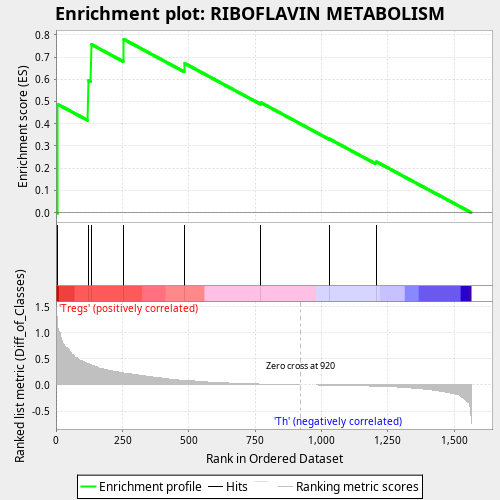
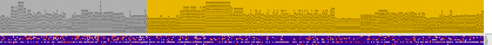
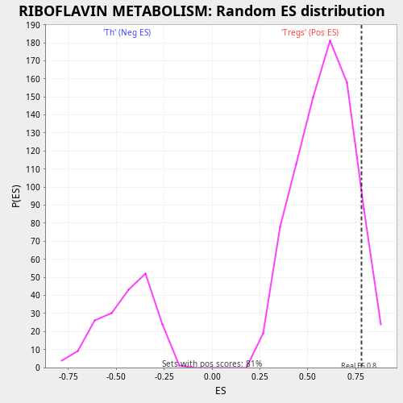

| | | Dataset | expr.pheno.cls#Tregs_versus_Th |
| Phenotype | pheno.cls#Tregs_versus_Th |
| Upregulated in class | Tregs |
| GeneSet | RIBOFLAVIN METABOLISM |
| Enrichment Score (ES) | 0.7800343 |
| Normalized Enrichment Score (NES) | 1.3280761 |
| Nominal p-value | 0.08138101 |
| FDR q-value | 0.5689046 |
| FWER p-Value | 0.98 |
Table: GSEA Results Summary

Fig 1: Enrichment plot: RIBOFLAVIN METABOLISM
Profile of the Running ES Score & Positions of GeneSet Members on the Rank Ordered List
| PROBE | DESCRIPTION
(from dataset) | GENE SYMBOL | GENE_TITLE | RANK IN GENE LIST | RANK METRIC SCORE | RUNNING ES | CORE ENRICHMENT | | 1 | ACP5 | na | | | 5 | 1.114 | 0.4877 | Yes |
| 2 | RFK | na | | | 120 | 0.409 | 0.5949 | Yes |
| 3 | ACP1 | na | | | 131 | 0.384 | 0.7578 | Yes |
| 4 | FLAD1 | na | | | 254 | 0.228 | 0.7800 | Yes |
| 5 | BLVRB | na | | | 484 | 0.087 | 0.6715 | No |
| 6 | ENPP1 | na | | | 771 | 0.017 | 0.4952 | No |
| 7 | ENPP3 | na | | | 1030 | -0.005 | 0.3316 | No |
| 8 | ACP2 | na | | | 1206 | -0.025 | 0.2304 | No |
Table: GSEA details [plain text format]

Fig 2: RIBOFLAVIN METABOLISM
Blue-Pink O' Gram in the Space of the Analyzed GeneSet

Fig 3: RIBOFLAVIN METABOLISM: Random ES distribution
Gene set null distribution of ES for RIBOFLAVIN METABOLISM